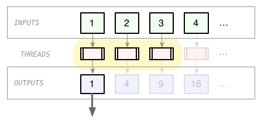

Enumerable, and the art of being lazy
Enumerable, and the art of being lazy
Mike Williams, June 2011 May 2016
a simple Enumerable
class SomeNumbers
# declare one method
def each
yield 0
yield 1
yield 1
yield 2
yield 3
yield 5
yield 8
end
# mix in a bunch more
include Enumerable
end
woohoo free stuff!
numbers = SomeNumbers.new numbers.to_a # => [0, 1, 1, 2, 3, 5, 8] numbers.take(5) # => [0, 1, 1, 2, 3] numbers.drop(5) # => [5, 8] numbers.max # => 8 numbers.collect do |x| x * 2 end # => [0, 2, 2, 4, 6, 10, 16] numbers.inject(&:+) # => 20
#to_enum (1.9)
turn any iterator into an Enumerator
io = StringIO.new("abcdefghijklmnopqrstuvwxyz")
io.each_char { |c| puts c }
# prints "a", "b", etc.
io.to_enum(:each_char).take(5)
# => %w(a b c d e f g)
array = %w(Juan Too Free) array.to_enum(:each_with_index).to_a # => [["Juan", 0], ["Too", 1], ["Free", 2]]
cf. Unix pipes
| Enumerable | Unix command |
|---|---|
select, reject, grep
|
grep, grep -v
|
collect/map
|
sed, awk, tr
|
sort, uniq
|
sort, uniq
|
take, drop
|
head, tail
|
cat messages.log | awk '{print $1}' | sort -u | wc -l
messages.collect { |line| line.split[0] }.uniq.size
similar
- small, simple operations
- pre-tested
- composable
but different
- not streamable
- not parallelisable
observation:
Some Enumerable operations have to read all the input before producing output, e.g.
-
min -
max -
sort -
inject
Some could start early, e.g.
-
select -
reject -
collect -
uniq
(but they don't)
an infinite Enumerable
class FibonacciSequence
def each
a = 0
b = 1
loop do
yield a
a, b = b, a+b
end
end
include Enumerable
end
irb> FibonacciSequence.new.each { |n| puts n }
0
1
1
2
3
5
8
13
21
...
"infinite" problems
fib = FibonacciSequence.new fib.take(5) # => [0, 1, 1, 2, 3] fib.drop(3).take(2) # ... a long wait fib.select(&:even?) # ... nada fib.collect do |x| x * 2 end # ... S.O.L.
"big" problems
# an ActiveRecord example
scope = Meetings.order_by("starts_at DESC")
meetings = scope.to_enum(:find_each)
recent_meeting_organisers = meetings \
.collect { |e| e.organiser.name } \
.uniq \
.take(20)
Problems:
- generates (using collect, and uniq) a bunch of objects that are never used
- might require a lot of memory for temporary storage
solution: unroll the loops
# BEFORE
recent_meeting_organisers = meetings \
.collect { |e| e.organiser.name } \
.uniq \
.take(20)
# AFTER
recent_meeting_organisers = []
meetings.each do |e|
name = e.organiser.name
unless recent_meeting_organisers.member?(name)
recent_meeting_organisers << name
end
break if recent_meeting_organisers.size == 20
end
Blah. WTF!?
Fibonacci, unrolled
fib = FibonacciSequence.new # get the first five even Fibonacci numbers fib.select(&:even?).take(5) # ... never returns # unrolled result = [] fib.each do |n| result << n if n.even? break if result.size == 5 end result # => [0, 2, 8, 34, 144]
Fibonacci, lazy
# get the first five even Fibonacci numbers
fib.select(&:even?).take(5) # ... never returns
fib.lazy.select(&:even?).take(5).to_a
# => [0, 2, 8, 34, 144]
require 'lazily'
fib.lazily.select(&:even?).take(5).to_a
# => [0, 2, 8, 34, 144]
breaking it down
all sugary
fib.lazily.select(&:even?).take(5)
functional
take(select(fib, &:even?), 5)
decorative
Taker.new(Selector.new(fib, &:even?), 5)
lazy "select"
class Selector
def initialize(source, &predicate)
@source = source
@predicate = predicate
end
def each
@source.each do |value|
yield value if @predicate.call(value)
end
end
include Enumerable
end
lazy "take"
class Taker
def initialize(source, n)
@source = source
@n = n
end
def each
@source.each_with_index do |value, index|
break if index >= @n
yield value
end
end
include Enumerable
end
decorative sugar
module Enumerable
def lazy_select(&predicate)
Selector.new(self, &predicate)
end
def lazy_take(n)
Taker.new(self, n)
end
end
fib.select(&:even?).take(5) # ... never returns
fib.lazy_select(&:even?).lazy_take(5)
# => [0, 2, 8, 34, 144]
Tah-dah!
Lazily
gem "lazily"
It applies layers of decorative laziness, e.g.
fib.lazily.select(&:even?).take(5)
#=> #<Lazily::Filter: take
#<Lazily::Filter: select
#<Lazily::Proxy:
#<FibonacciSequence:0x007f8bc22ce868>>>>
but wait, there's more!
combining Enumerables
numbers_a = [1, 2, 5] numbers_b = [3, 4, 6] Lazily.zip(numbers_a, numbers_b).to_a # => [[1, 3], [2, 4], [5, 6]] Lazily.concat(numbers_a, numbers_b).to_a # => [1, 2, 5, 3, 4, 6] Lazily.merge(numbers_a, numbers_b).to_a # => [1, 2, 3, 4, 5 ,6] words_1 = %w(a dd cccc) words_2 = %w(eee bbbbb) Lazily.merge(words_1, words_2, &:length).to_a # => %w(a dd eee cccc bbbbb)
combine big/infinite things
# some source of content sources = [ Post.recent.authored_by_friends_of(@user), Post.recent.on_interests_of(@user), UserFollowing.recent.by_friends_of(@user), TopicFollowing.recent.by_friends_of(@user) ] # stream each, most recent first streams = sources.map do |source| source.to_enum(:find_each).lazily.uniq end # merge into a single stream merged_stream = Lazily.merge(*streams, &:recency) # grab a page's worth page = merged_stream.take(23)
lazy dequeue
q = Queue.new Thread.new do q << 1 q << 2 q << 3 q << nil # acts as "terminator" end Lazily.dequeue(q).each do |item| do_something_with(item) end Lazily.dequeue(q).take(2).to_a # => [1,2] Lazily.dequeue(q).take(2).to_a # => [3]
lazy threads
slow_double = ->(x) { sleep 1; x * 2 }
Benchmark.realtime do
fib.lazily.map(&slow_double).take(100).to_a
end
#=> 100.14 seconds
Benchmark.realtime do
fib.lazily.in_threads(8, &slow_double).take(100).to_a
end
#=> 13.02 seconds
lazy threads involve some pre-work
inputs = (1 .. 100) outputs = inputs.lazily.in_threads(3) do |i| i * i end outputs.take(5).to_a #=> [1, 4, 9, 16, 25]
